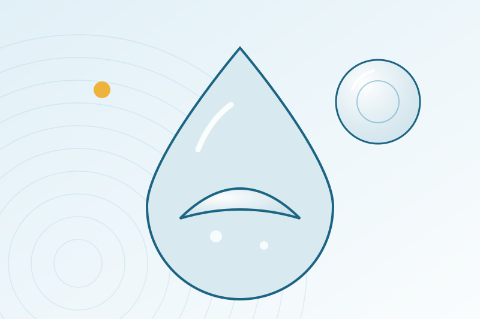
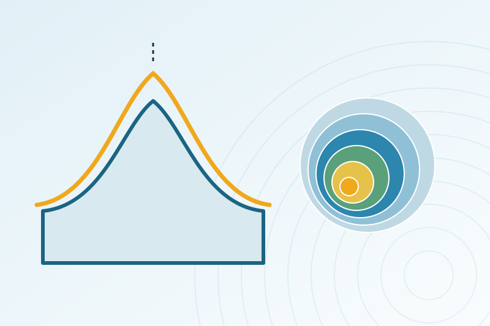
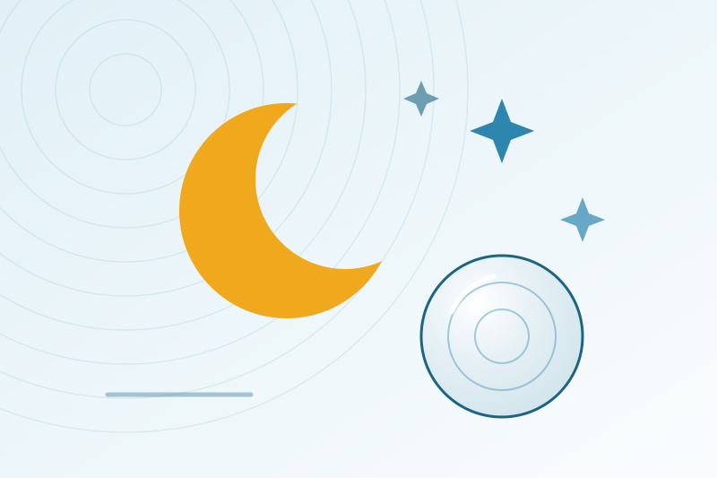
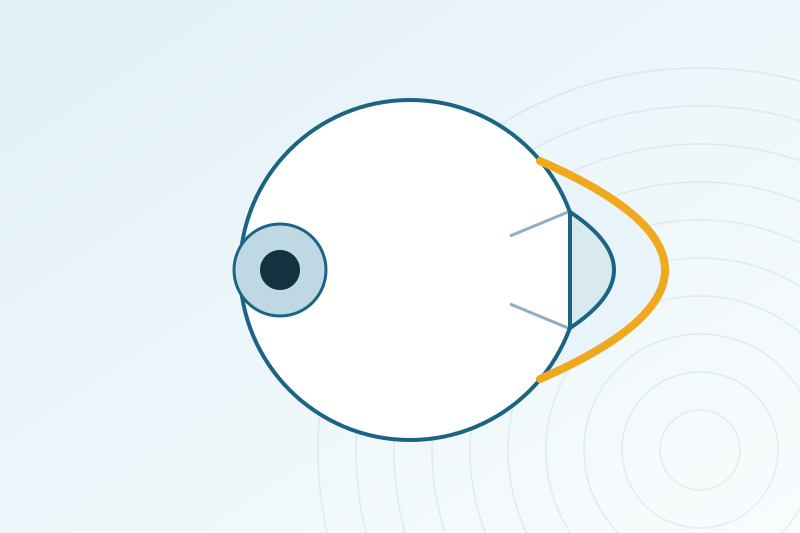
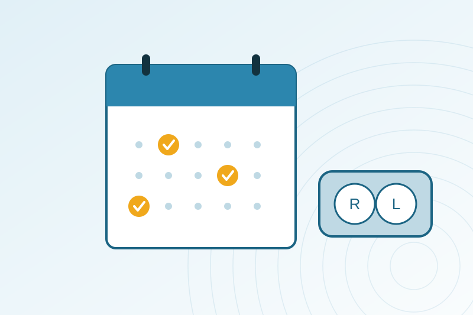

Kontaktlinsen
Ein Leben ohne Brille? Wir zeigen Ihnen, welche Linsen dafür infrage kommen, und passen sie an. Für Anpassung und Beratung nennen wir hier keine Preise: Sie hängen vom Einzelfall ab, und oft übernimmt die Krankenkasse die Kosten.
Weiche Kontaktlinsen
Monats-, Wochen- und Tageslinsen sind weiche Linsen, die nach einem festen Zeitraum durch neue ersetzt werden. Der Tauschrhythmus steckt im Namen: Eine Monatslinse tragen Sie einen Monat lang, eine Tageslinse nur einen Tag.
Die Linsentypen unterscheiden sich in Material, Geometrie und lieferbaren Stärken. Weil der Markt unübersichtlich ist, suchen wir mit Ihnen den passenden Typ und das passende Material heraus, passen die Linsen an und kontrollieren, ob sie sich in Ihrem Alltag bewähren. Erst die richtige Kombination aus Linse und Pflegemittel macht das Tragen langfristig angenehm.
- Tausch
- täglich, wöchentlich oder monatlich
- Individuell
- nein, Standardnormen
- Kontrolle
- alle 6 Monate

Formstabile Kontaktlinsen
Jedes Auge ist anders. Formstabile Linsen werden nach Maß gefertigt und lassen sich deshalb besonders genau auf Sie abstimmen.
Zur Anpassung gehören ein ausführliches Gespräch sowie die Untersuchung und Vermessung von Hornhaut und Auge. Mit unserer hauseigenen Nachbearbeitung optimieren wir die Linse vor Ort für Sitz und Komfort.
Formstabile Linsen eignen sich für Menschen, die ihre Linsen täglich und viele Stunden tragen. Bei guter Pflege halten sie bis zu 3 Jahre. Welches Pflegeprodukt passt, hängt vom Stoffwechsel des Auges und vom Tränenfilm ab. Auch das klären wir mit Ihnen.
- Haltbarkeit
- bis zu 3 Jahre bei guter Pflege
- Fertigung
- nach Maß
- Anpassung
- mit Vermessung und Nachbearbeitung im Studio

Mehrstärkenlinsen
Mit zunehmendem Alter lässt die Elastizität der Augenlinse nach, und das Auge stellt nahe Dinge schlechter scharf. Wer beim Lesen das Buch weiter weghalten muss, kennt das. Das ist ganz natürlich und kein Grund, auf Kontaktlinsen zu verzichten.
Es gibt weiche und formstabile Linsen, die neben der Ferne auch die Nähe korrigieren. Die Anpassung richtet sich danach, welche Arbeitsentfernungen Sie hauptsächlich nutzen und wie Sie sehen. Oft lassen sich auch Menschen mit Hornhautverkrümmung versorgen. Welche Art für Sie die richtige ist, entscheiden wir vor Ort nach dem Gespräch.

Keratokonus-Linsen
Beim Keratokonus verdünnt sich die Hornhaut und wölbt sich kegelförmig vor. Das führt zu Sehverlust in der Nähe und Ferne, zu Blendung, schwächerem Kontrast und Doppelbildern. Die Erkrankung ist fortschreitend und verläuft oft in Schüben.
In frühen Stadien reichen manchmal Brillengläser. Später, wenn die Hornhaut sehr unregelmäßig wird, sind spezielle formstabile Linsen das wichtigste Hilfsmittel. Ihre Geometrie wird so gewählt, dass kein Druck auf die erkrankte Hornhaut entsteht. So bleibt die Hornhaut möglichst lange klar, und das Tragen fühlt sich angenehm an.
- Kosten
- Ab einem bestimmten Stadium übernehmen die gesetzlichen Krankenkassen sie.
- Ihr Teil
- Rezept Ihrer Augenärztin oder Ihres Augenarztes mitbringen.
- Unser Teil
- Wir erstellen den Kostenvoranschlag und reichen ihn bei Ihrer Krankenkasse ein.

Orthokeratologie: nachts tragen, tagsüber ohne Brille sehen
Bei der Orthokeratologie formen speziell gewählte formstabile Linsen die Hornhaut über Nacht. Die Krümmung flacht ab, und die Kurzsichtigkeit verringert sich. Geeignet ist das Verfahren vor allem bei geringer bis mittlerer Kurzsichtigkeit. Oft ist die Korrektur nach einigen Tagen stabil.
Anders als eine Laser-Operation ist Orthokeratologie umkehrbar: Wenn Sie aufhören, bildet sich die Hornhautform zurück. Sie können das Verfahren also unverbindlich ausprobieren. Dafür werden formstabile Linsen individuell nach Maß gefertigt.
Und bei Kindern?
Studien zeigen, dass Orthokeratologie das Längenwachstum des Auges verlangsamen kann. Dieses Wachstum ist bei Kindern der Hauptgrund dafür, dass die Kurzsichtigkeit zunimmt. Ob das für Ihr Kind sinnvoll ist, besprechen wir im Beratungsgespräch. Frühe Kontrollen und regelmäßige Nachsorge sind wichtig, um die Augengesundheit zu sichern.
- Tragezeit
- über Nacht
- Umkehrbar
- ja, die Hornhaut bildet sich zurück
- Linsen
- formstabil, nach Maß gefertigt

Sklerallinsen
Sklerallinsen sind große formstabile Linsen. Sie überbrücken die Hornhaut, ohne sie zu berühren, und liegen auf der Bindehaut auf. Weil sie sich wenig bewegen, tauscht sich der Tränenfilm schlechter aus. Deshalb sind sie nicht die erste Wahl.
Sinnvoll sind sie, wenn kleinere Linsen nicht zufriedenstellend sitzen und eine Brille schlechter korrigiert, etwa nach Verletzungen der Hornhaut oder bei sehr unregelmäßiger Hornhaut. Bei sehr trockenen Augen, etwa durch Autoimmunerkrankungen oder unvollständigen Lidschlag, können sie wie eine Verbandlinse das Trockenheitsgefühl spürbar verringern.
Eyeprint: Linse nach Abdruck
Lässt sich das Auge nicht zuverlässig vermessen, erstellen wir einen Abdruck von Bindehaut und Hornhaut. Auf dieser Basis wird eine individuelle Sklerallinse gefertigt. Damit lassen sich auch stark unregelmäßige Hornhäute versorgen, etwa nach Verletzungen oder bei weit fortgeschrittenem Keratokonus.

Servicevereinbarung
Die Servicevereinbarung ist ein Paket aus Produkten und Leistungen, das wir individuell für Sie zusammenstellen. Sie erhalten Ihre Kontaktlinsen und Pflegemittel zu einem festen Monatspreis.
Laufzeit, Zahlung und Kündigung besprechen wir vor dem Abschluss mit Ihnen und halten sie im Vertrag fest. (Beispieltext: Bedingungen des echten Studios rechtlich prüfen lassen.)

Häufige Fragen
Wie oft muss ich zur Kontrolle?
Wir empfehlen eine Kontrolle alle 6 Monate. So stellen wir sicher, dass Sie weiterhin die passende Linse tragen.
Was kostet die Anpassung?
Das hängt von Linsentyp und Aufwand ab. Schreiben Sie uns oder rufen Sie an, dann nennen wir Ihnen vorab einen Richtwert für Ihren Fall.
Übernimmt die Krankenkasse die Kosten?
Bei Keratokonus ist das ab einem bestimmten Stadium gesetzlich vorgesehen. Dafür brauchen wir ein Rezept Ihrer Augenärztin oder Ihres Augenarztes und erstellen daraus einen Kostenvoranschlag für Ihre Krankenkasse. In anderen Fällen klären wir das im Gespräch.
Kann ich mit Kontaktlinsen ohne Lesebrille lesen?
Oft ja. Mehrstärkenlinsen korrigieren Ferne und Nähe. Welche Art für Sie passt, entscheiden wir nach dem Gespräch und der Vermessung.
Ist Orthokeratologie rückgängig zu machen?
Ja. Hören Sie auf, die Linsen zu tragen, bildet sich die Hornhautform zurück.